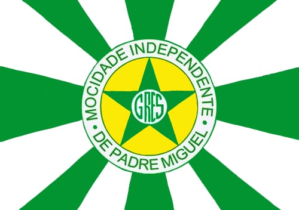

A Mocidade Independente de Padre Miguel é uma tradicional escola de samba do Rio de Janeiro, fundada em 1955. Conhecida por suas cores verde e branco, a escola se destaca por seus desfiles criativos e marcantes no carnaval. Atualmente possui duas quadras, uma histórica próxima à Vila Vintém e outra na Avenida Brasil, conhecida como o "Maracanã do Samba".
